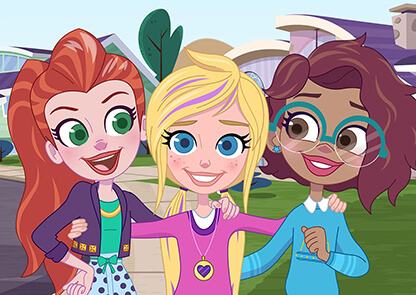

Sean todos muy bienvenidos
En este sitio web, en el cual haré una presentación sobre mí para que puedan conocerme mejor, les mostraré mis trabajos como estilista de moda y diseñadora indumentaria, y también les dejaré un espacio de contacto para que puedan contactarse conmigo y charlemos acerca de sus intereses sobre moda.
Ahora les quiero presentar a mi staff, conformado por mis dos mejores amigas, Polly y Shani, y yo, Lila. Cada una de nosotras tiene un rol especial, Polly se encarga de los encargos, Shani de las ventas y yo de la confección y diseño.
Les dejaré una foto de nosotras juntas para que nos conozcan, y para que puedan identificarnos, la pelirroja soy yo, la rubia a mi lado es Polly y la morocha, Shani.

Últimas tendencias
En esta parte les quiero enseñar algunas de las últimas tendencias en el gran mundo de la moda, si les gusta alguno de ellos, pueden escribirme en la sección Contacto y en la brevedad estaremos hablando sobre tu estilo y gusto.
A continuación les dejo una galería de imágenes para que puedan ver los modelos de esta nueva temporada:
{kind=link}
{kind=link}
{kind=link}
{kind=link}